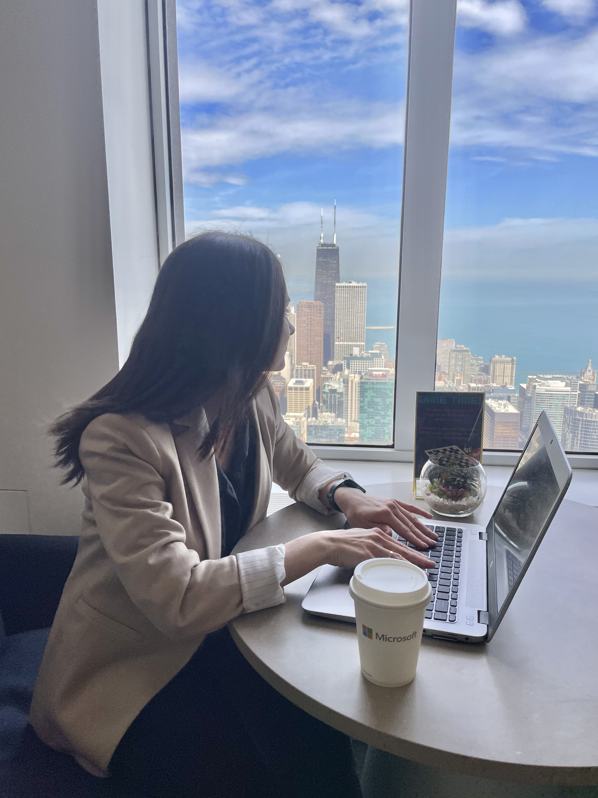

Plans for the Next Years:
2022 - Year of Stress
The year 2022 was a time of stress and trauma for the all Ukrainians. The country experienced killing of a lot of people including kids, economic uncertainty, and ongoing war, resulting in widespread fear and anxiety. Many Ukrainians faced difficult circumstances, and the impact of these events will be felt for years to come for me as well.
2023 - Year of Great Desidion
I have made the decision to apply for the i.c.stars courses, which provided me with the opportunity to transform my life in just four months. Through this program, I gained valuable skills in IT and have the chance to pursue my dream job. I am excited about the possibilities that lie ahead and eager to take this next step in my career.
2024 - Year of my New Career
I am planning to learn a new profession this year, and I am really excited about it. I know it's going to be a big challenge, but I am ready to put in the hard work and dedication to make it happen. I'm willing to invest the time and resources necessary to acquire new skills. I know it won't be easy, but I am motivated by the idea of greater career opportunities, increased job satisfaction, and the sense of accomplishment that comes with mastering a new skillset. I've set clear goals and a realistic timeline for my learning journey, and I am excited to see where this new path takes me.
2025 - Year of Professional Growth
As someone who is passionate about technology and eager to learn more, I am committed to growing as a professional in the field of IT. I recognize the importance of staying up-to-date with the latest trends and developments, and am always seeking out opportunities to improve my skills and expand my knowledge base. I am excited about the possibilities that lie ahead and am eager to continue growing in my career.
2026 - Year of my New Place to Live
My family and I have decided to relocate to another state in search of warmer weather. We have always loved the idea of living in a place with mild temperatures and plenty of sunshine, and we believe this move will be the perfect opportunity to make that dream a reality. We are excited about the prospect of finding a new home and beginning this new chapter in our lives.
2027 - Year of Homeland and Travelling
My family and I are planning a trip to Ukraine after the war to reunite with our relatives, whom we have missed dearly. After spending some quality time with them, we plan to rent a car and explore the beautiful landscapes of Ukraine and Europe. We are looking forward to experiencing new cultures, tasting local cuisines, and creating unforgettable memories together. This trip promises to be an adventure of a lifetime, and we can hardly wait to embark on this journey.
2032 - Year of my Company

My dream is to establish my own IT company. I am passionate about technology and have always been fascinated by the ever-evolving nature of the industry. I believe that with hard work, dedication, and a clear vision, I can build a successful business that will make a positive impact on the world. I am excited about the possibilities that lie ahead and am determined to make my dream a reality.
2037 - Year of Karate Volunteering
Inspired by my husband and kids, who are successful karate players, I am eager to follow in their footsteps and become a skilled martial artist myself. I believe that with dedication and hard work, I can achieve my goal and eventually train the next generation, including my grandkids and other kids. I am excited about the challenge and look forward to the opportunities that lie ahead.
2042 - Year of Mentoring
As someone who is passionate about technology and eager to help others succeed, I am planning to become an IT mentor for new professionals. I believe that by sharing my experiences and providing guidance and support, I can help others navigate the challenges of the field and achieve their goals. I am excited about the opportunity to give back and make a positive impact on the next generation of IT professionals.
2047 - Year of Volunteering in Church
Volunteering in my church is something I am passionate about. I believe that giving back to the community and supporting others is an important part of living a fulfilling life. Whether through service projects, events, or other activities, I am eager to contribute my time and energy to help others and make a positive impact in my community. I look forward to the opportunities that volunteering in my church will provide.
2052 - Year of Family and Freedom
Spending quality time with my family is one of my top priorities. Whether through fun activities, relaxing vacations, or simply enjoying each other's company at home, I am committed to making the most of our time together. I believe that creating happy memories with my loved ones is an essential part of a fulfilling life, and I am eager to make the most of every opportunity to do so.